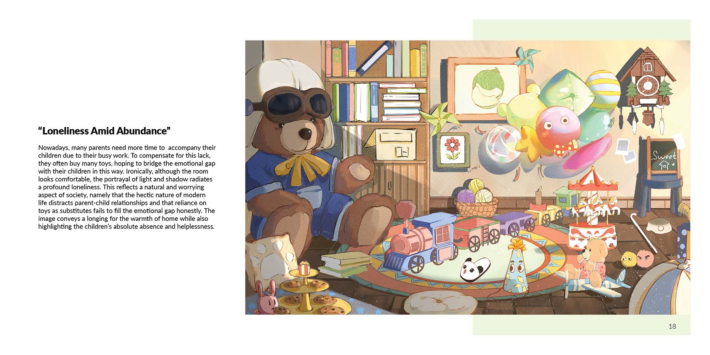
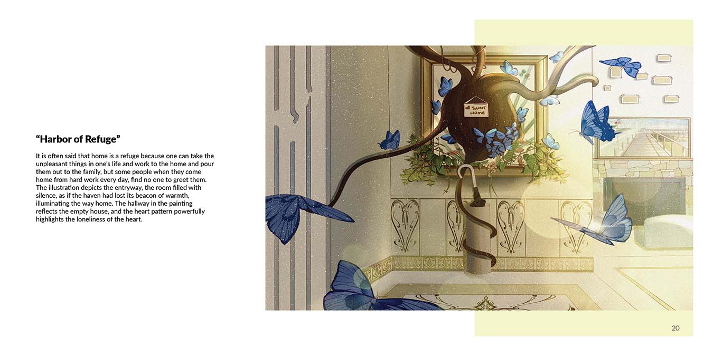
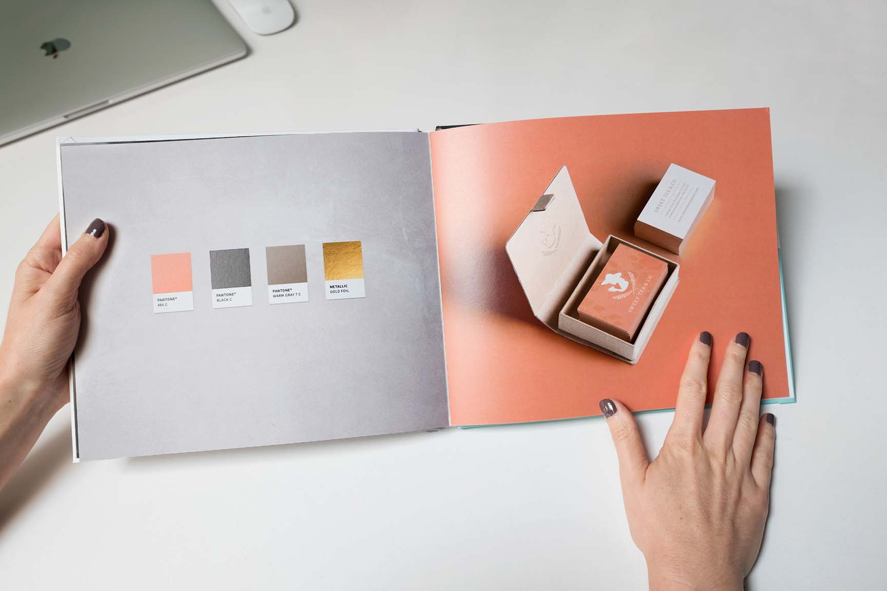

Previous Student Examples
 Here's a Guide
If you're considering changing careers and entering the art industry but struggling to build your own portfolio, don't worry! This video will walk you through how to create a professional art portfolio step by step.
Tools You'll Use
Adobe Photoshop & Adobe InDesign
If you're new to these tools, explore these links for tutorials and practical examples. Photoshop Tutorials | InDesign Tutorials
Steps to Build Your Portfolio
- Clarify Your Goal: Define the job or program you’re targeting.
- Choose Platform & Format: Decide between a website, PDF, or printed book.
- Curate Your Best Work: Select 8–12 of your strongest, most relevant pieces.
- Document Each Project: Add clear visuals, concise text, and process images.
- Add Professional Touches: Include resume, contact info, and simple branding.
- Test & Get Feedback: Have peers or mentors review it before submission.
- Finalize & Export: Export for web or print under 15MB, ensure mobile-friendly layout.
Remember: A great portfolio tells a story. Start strong, maintain consistent design, and update regularly as you grow.
Need Design Inspiration?
Learn from MoMA and The Met
- MoMA (Museum of Modern Art)
- Virtual Views: Explore Van Gogh’s *Starry Night* in high resolution.
- Inspiration Tip: Use close-ups and wide shots to create storytelling flow.
- The Met (Metropolitan Museum of Art)
- The Met 360° Project: Offers immersive panoramic gallery tours.
- Inspiration Tip: Use panoramic layouts or interactive mockups to showcase projects.
